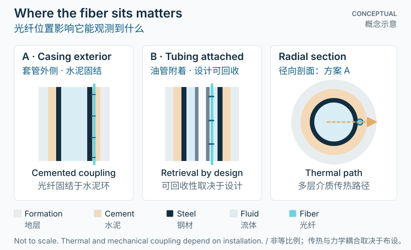

先理解：位置决定观测对象
“井里有光纤”仍不足以说明它能够测到什么。套管外的电缆、绑在油管上的电缆，以及临时下入井内的电缆，距离流体、套管、水泥环和围岩不同，也通过不同路径接收热量与变形。商业系统提供永久套管外、油管附着及钢丝、电缆或连续油管输送等部署方式。[1]
必须区分裸光纤和光缆。保护层、金属管和加强构件不仅影响耐受性，也改变热响应与应变传递。目标若是 DTS，可能更强调温度响应并隔离机械应变；目标若是 DSS，则需要可解释、经过验证的机械传递路径。[4]
永久式与临时式描述部署与回收策略，而不是独立的传感原理。永久系统可在施工时预装；临时系统可支持后续调查，但需要合适的下入通道与作业安排。
“There is fiber in the well” does not establish what it can measure. A cable outside casing, one clamped to production tubing, and one temporarily conveyed inside the well sit at different distances from fluids, steel, cement, and formation. They receive heat and deformation through different pathways. Commercial arrangements include permanent behind-casing and on-tubing installations, plus wireline, slickline, or coiled-tubing conveyance.[1]
Distinguish the bare optical fiber from the cable. Protective layers, metal tubes, and strength members influence survivability, thermal response, and strain transfer. A temperature-oriented design may isolate mechanical strain; a DSS installation needs a known, validated mechanical transfer path.[4]
Permanent and temporary describe deployment and retrieval strategies, not separate sensing principles. Permanent systems can be installed during construction; temporary systems support later investigations when access and operations permit.

深入：三种典型布设
套管外，随后被水泥包围
光缆随套管下入，固井后位于套管外的水泥环中。它可持续观测固井及后续过程，且有机会与井筒结构形成机械联系。代价是安装阶段需提前规划，固井后通常难以替换；耦合仍取决于水泥、电缆和局部几何，不能只由“套管外”三个字保证。原位对比研究表明，电缆设计是解释温度和应变响应的重要因素。[1][4]
附着于生产油管
光缆固定在油管上，处于已下套管的井内。其响应可能更直接地受到油管振动、流体和作业噪声影响。公开现场案例证明油管附着光缆可用于地震观测，但一个成功案例并不意味着它与水泥固结光缆具有相同的应变传递关系。能否回收还取决于是否起出油管和具体完井设计。[2]
临时输送到井内
带光纤的测井电缆、钢丝或连续油管可提供阶段性观测。一项连续油管现场案例同时应用了 DAS 与 DTS。此类布设适合针对某次调查获取数据，但电缆张力、接触状态、工具运动、流动及深度定位都需要考虑。可回收不代表对现场干扰为零。[1][3]
Outside casing, subsequently cemented
A cable is run with casing and sits in the annulus after cement placement. This offers continuing access to construction and later signals, with the potential for mechanical coupling to the well structure. It requires early planning and is usually difficult to replace after cementing. Coupling still depends on cement, cable construction, and local geometry. “Behind casing” alone does not establish strain transfer; field comparisons show that cable design matters to temperature and strain interpretation.[1][4]
Attached to production tubing
A cable is secured to tubing within the cased well. Its response may be more directly influenced by tubing vibration, fluids, and operational noise. A published operator/vendor case demonstrates tubing-mounted fiber for seismic acquisition, but that success does not establish the same strain transfer as a cemented cable. Retrieval may require pulling tubing and depends on the completion design.[2]
Temporarily conveyed inside the well
Fiber-enabled wireline, slickline, or coiled tubing can provide campaign-based measurements. A coiled-tubing field case used both DAS and DTS. Such deployments can target a particular investigation, but tension, contact, tool movement, flow, and depth registration affect interpretation. Retrievability does not mean deployment has no operational footprint.[1][3]
深入：从测量目标倒推设计
设计讨论可按以下顺序展开，而不是先比较电缆长度：
- 目标过程。要观察地层变形、井筒流动、套管运动，还是温度演化？不同问题所需的耦合不同。
- 实际位置。记录电缆在井筒中的径向位置、沿程路径、接头、余长与深度对应关系。名义井深和光学距离应区分。
- 传递与保护。评估热路径、应变传递、局部接触及作业损伤风险，并考虑满足设计条件的井口引出和压力隔离。
- 可验证性。保留安装前后的光学连续性检查和基线；结合已知作业事件及独立测量检验响应。
上述是测量设计问题，不是通用安装步骤。耐温、耐压、弯曲和材料要求必须按具体井况、光缆规格及专业工程设计确定。[1][4]
A useful design discussion works backward from the question:
- Target process. Is the objective formation deformation, wellbore flow, casing movement, or thermal evolution? These require different coupling.
- Actual position. Document radial placement, route, connections, slack, and depth registration. Keep optical distance distinct from nominal well depth.
- Transfer and protection. Assess thermal pathways, strain transfer, local contact, and installation-damage risks, together with a suitable pressure-rated wellhead and feedthrough design.
- Validation. Retain optical-continuity checks and baselines before and after installation. Compare responses with known operational events and independent measurements.
These are measurement-design questions, not a generic installation procedure. Temperature, pressure, bending, and material requirements must come from well-specific conditions, cable specifications, and qualified engineering design.[1][4]
解释边界：不能忽略传递路径
不同布设方式的数据不能默认直接互换。 松耦合、油管附着和水泥固结电缆可能观测同一事件，却具有不同的振幅、频率响应与温度滞后。应以实际耦合证据解释数据，而不是仅凭安装类别。[4]
一根沿井纵向布置的光纤也不提供完整的周向覆盖。无异常信号不能单独证明整圈水泥完好；异常同样需要排查光学损耗、局部接触或作业噪声。
Measurements from different deployments are not automatically interchangeable. Loosely coupled, tubing-attached, and cemented cables can observe the same event with different amplitudes, frequency responses, and thermal lag. Interpret actual coupling evidence rather than installation labels alone.[4]
One longitudinal fiber also lacks complete circumferential coverage. A quiet signal cannot by itself prove that the whole cement annulus is sound. An anomaly may instead require checks for optical loss, local contact, or operational noise.
参考资料
- SLB (2021) · Optiq Schlumberger fiber-optic solutions制造商原始发布：永久与临时布设方式
- SLB · Optiq Seismic Gulf of Mexico case study制造商现场案例：生产油管上的光缆
- Halliburton · FiberVSP service acquires quality VSP data in significantly less time制造商现场案例：连续油管中的光缆、DAS 与 DTS
- Amer et al. (2024) · Distributed fiber optic temperature and strain sensing in cementing and water injection: Insights to well integrity monitoring and multisensing optical fiber cable design原始现场研究 · Gas Science and Engineering
学习资料 · 图示非实测数据 · 具体工程决策须结合适用要求和独立验证